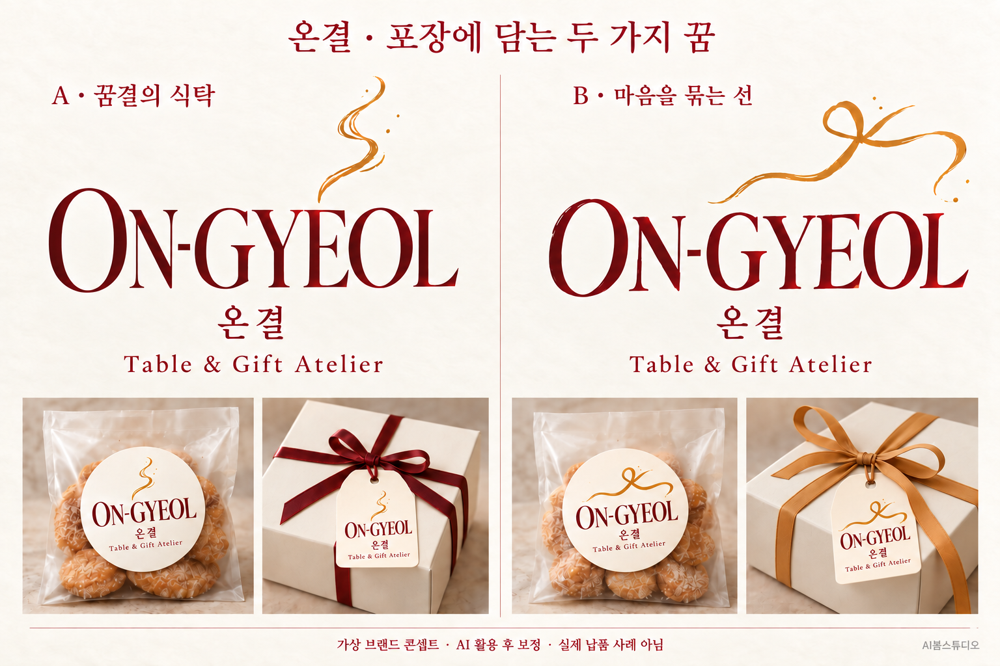
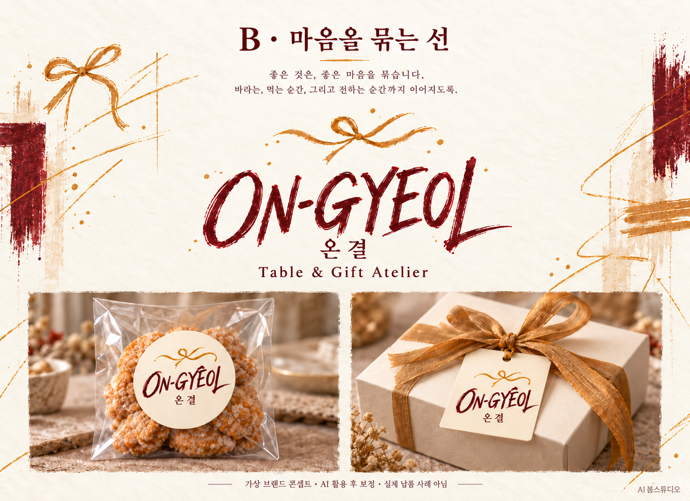
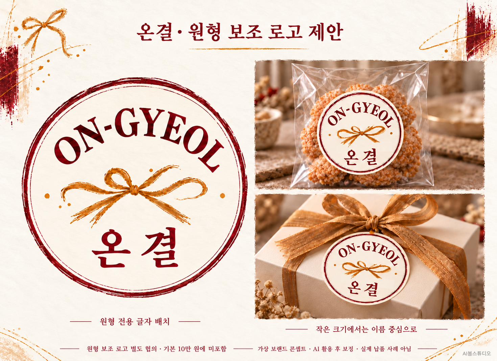

AI·SVG 포함, 총 10만 원
시안 2종 중 최종 1안·색상과 배치 수정 2회. 최종 1안의 AI·SVG·CMYK PDF·투명 PNG·JPG와 사용 안내를 제공합니다. PNG·JPG는 합의한 인쇄 크기 기준 300dpi 이상입니다.
온결 · ON-GYEOL
디저트 카페와 답례품 브랜드를 상상하며 만든 두 가지 로고 방향입니다. 버건디와 금색으로 따뜻함을 담고, 향기와 리본의 선으로 서로 다른 표정을 제안합니다.
가상 브랜드의 자체 제작 홍보용 콘셉트 · AI 활용 후 보정 · 실제 고객 납품 사례 아님
포장 사진은 적용 예시이며 실물 제작·인쇄 검증 완료를 의미하지 않습니다.

단정한 글씨와 따뜻한 향기를 떠올리는 금색 곡선. 차분하고 정갈한 선물의 인상을 담았습니다.
자유로운 글씨에 작은 리본을 더했습니다. 먹는 순간에서 건네는 마음까지 이어지는 포장 분위기입니다.

원형에 맞춰 이름과 리본을 새롭게 배치한 보조 로고 제안입니다.
원형 보조 로고는 기본 100,000원에 포함되지 않습니다.
제작 범위·납품 파일·금액은 별도 협의합니다.

전시된 기존안 중 1개를 선택해
현재 디자인 그대로 구매합니다.
기존 형태와 상호 그대로 제공하는 비독점 사용 상품입니다. 상호·색상·배치 변경, 새 시안과 수정은 포함되지 않습니다. 같은 안이 다른 구매자에게도 제공될 수 있으며 상표 등록 가능성·독점권을 보장하지 않습니다. 실제 사용 목적과 규격을 확인한 뒤 납품 일정을 안내합니다.
기존안 구매 안내 보기고객의 상호와 원하는 분위기에 맞춰
두 가지 방향 시안을 제안합니다.
새로운 방향의 재제작, 추가 시안과 인쇄물 편집은 별도 협의합니다. AI·SVG 파일 제작비는 10만 원에 포함하며 별도 추가금이 없습니다. 글자는 윤곽선·경로로 편집할 수 있으며, 입력 가능한 폰트 파일은 제공하지 않습니다. 맞춤 제작은 최종 선택안 1종을 납품하며 18안 전체를 제공하지 않습니다. 기존안 그대로 구매하는 5만 원 상품과는 범위가 다릅니다.
시안 2종 중 최종 1안·색상과 배치 수정 2회. 최종 1안의 AI·SVG·CMYK PDF·투명 PNG·JPG와 사용 안내를 제공합니다. PNG·JPG는 합의한 인쇄 크기 기준 300dpi 이상입니다.
의견을 한 번에 모아 전달한 것을 1회로 계산합니다. 포함된 2회 이후 동일 선택안의 색상·배치 수정은 1회 50,000원입니다. 당사 오탈자·합의 내용 누락은 무료 정정합니다.
시안 2종 중 최종 1안·수정 2회를 포함합니다. 추가 비용과 일정에 동의받은 뒤 작업합니다. 패키지·스티커·명함·간판 도안 편집, 실물 제작과 교정은 별도 협의입니다.
AI로 아이디어와 초안을 탐색한 뒤 형태·글자 간격·비율·색상을 보정하고 실제 벡터 경로로 재제작합니다. 상업 이용 가능한 글꼴과 윤곽선, 작은 크기·단색 표현, Illustrator 호환성을 점검합니다.
선택된 디자인을 기준으로 재제작하고 최종 형태를 확인한 뒤 납품합니다. 일정·인쇄 크기·인쇄소 요구 규격·색상 조건은 착수 전 협의합니다. 미선택 시안은 납품에서 제외합니다. 이 조건은 맞춤 로고 상품에 적용하며, 기존안 구매·캐릭터 제작은 각 상품의 별도 범위를 따릅니다.
상호·업종·원하는 분위기·사용처·희망 일정을 정리해 블로그 글에 댓글로 남겨 주세요. 착수 전 제작 범위와 일정을 확인합니다.